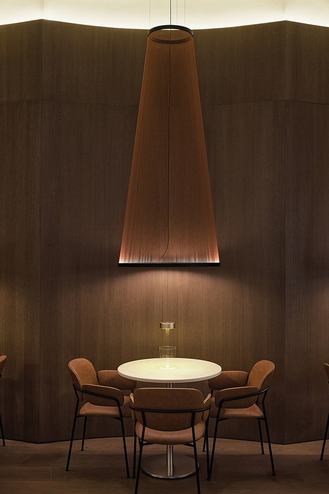
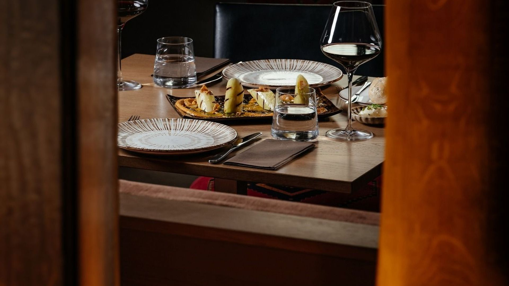
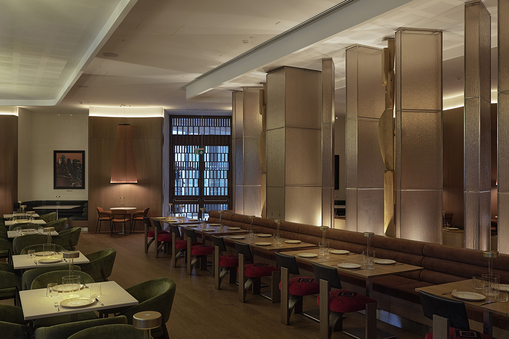
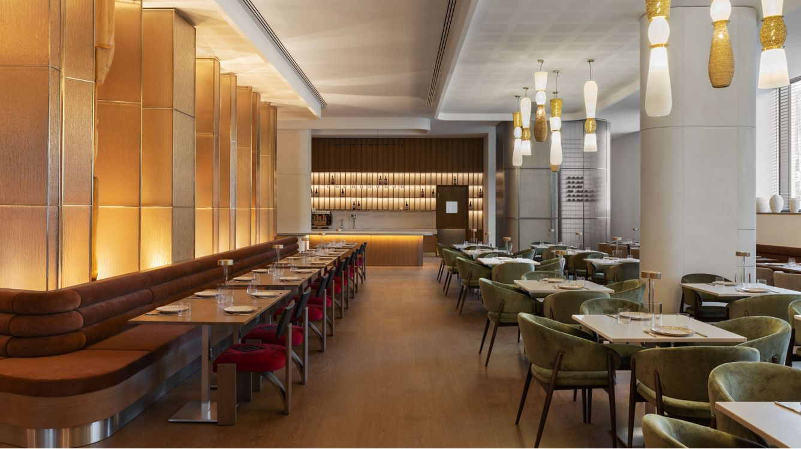
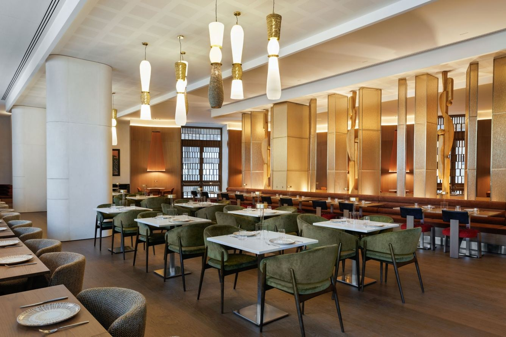
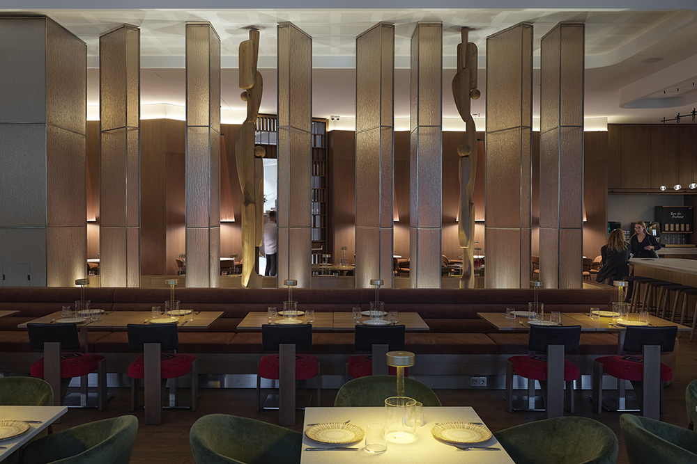
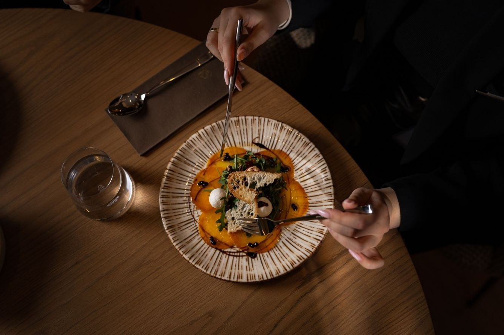
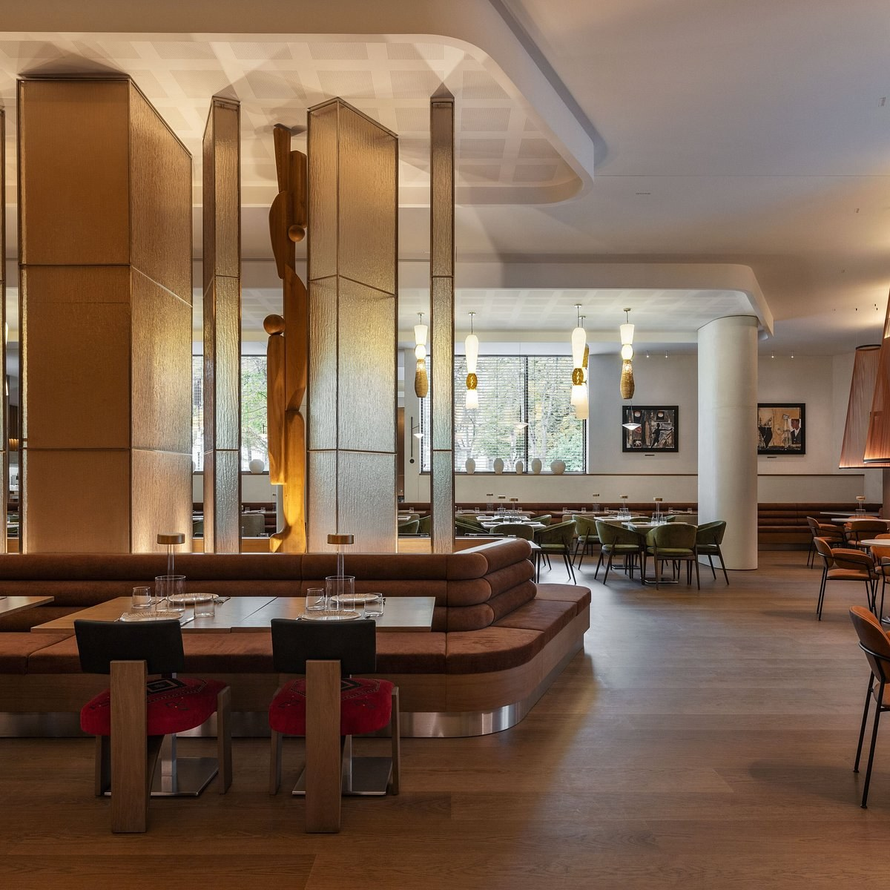
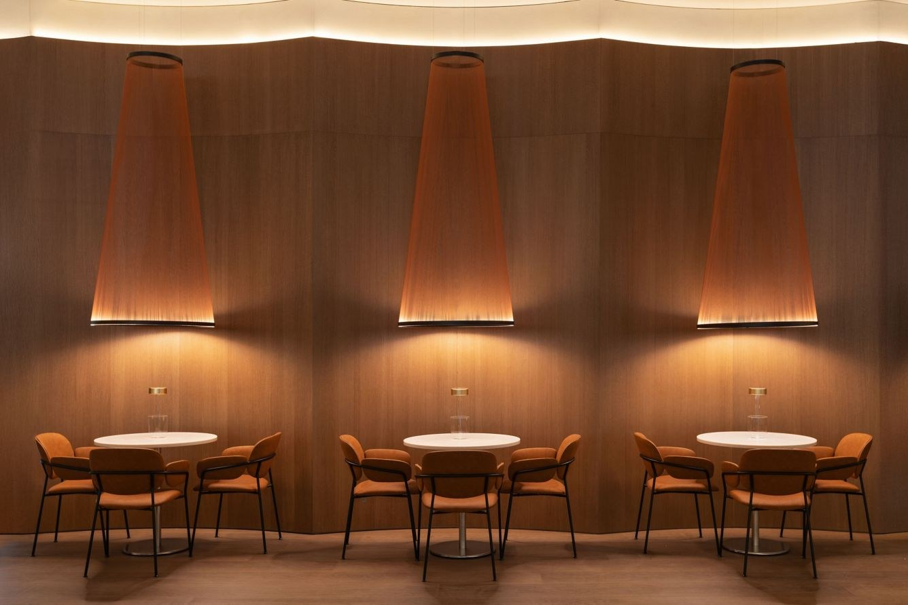
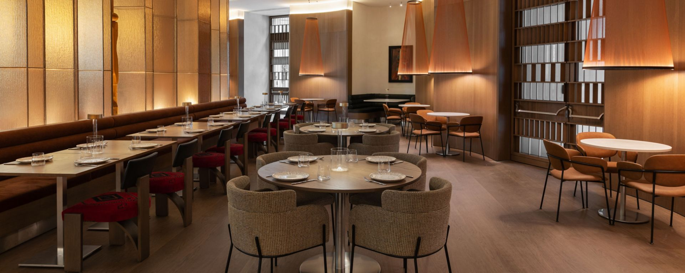

01Jaukumas slypi detalėse.
Šilta šviesa ir jaukus kampelis ilgiems pokalbiams.



Baskų krašto skoniai. Vilniaus istorijos.
Grilio aromatai, baskų skoniai ir pokalbiai iki vėlumos.
Atraskite mūsų meniuRezervuoti staliuką
Iš Baskų krašto į Vilnių
„Saint Jacob’s“ - šiuolaikinė baskų virtuvė Vilniaus centre. Jūros gėrybės, ant grilio ruošiami patiekalai ir užkandžiai dalintis čia susitinka su kūrybišku požiūriu į tradicijas.
Užsukite vakarienės dviese ar ilgesniam vakarui su draugais. Rinkitės po truputį, ragaukite kartu ir atraskite savo Baskų krašto skonį.
Saint Jacob’s iš arčiau

01Šilta šviesa ir jaukus kampelis ilgiems pokalbiams.

02Šiltas apšvietimas, medžio faktūros ir savitas Vilniaus vakaro ritmas.
Susirinkite su draugais, dalinkitės patiekalais ir atraskite baskų virtuvę kartu.
Kelionė prasideda nuo pirmo kąsnio




Vasario 16-osios g. 5, Vilnius
AC Hotel by Marriott Vilnius